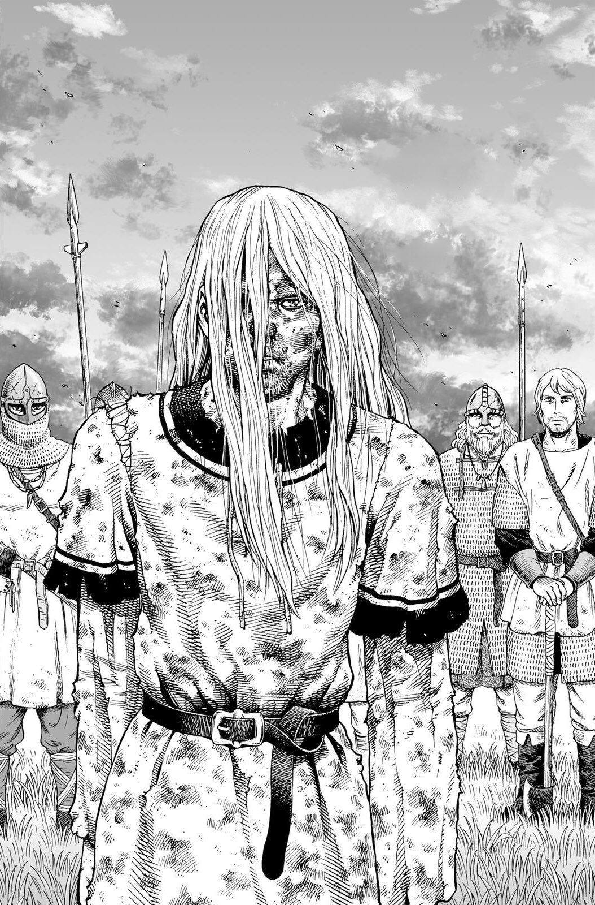

Tokyox establishes itself as a community of individuals who enjoy reading manga and contain appreciation towards
specific manga panels. We hope to have formed a place for manga enjoyers to come together, and appreciate their
favorite pieces of panels within the manga they enjoy. This community is NOT intended for a certain area or type of
person, but just an international community or people to appreciate manga. Submissions of your favorite manga panels
are available, through submission and are also available through the contact form. This website changes monthly in manga
panels through submissions, and brief analysis of the manga panels will also be displayed. The manga panels are rated through a vote with three different rating. One is it's beauty,
two it's meaning, and three a unique reason it is as powerful as it is. The top six panels that have the highest rating of the three averaged together display on the main page, and the one's that scale highest in other rating will have their own pages.
There is a page for beauty, meaning, and unique reasoning on this page, and a place for all panels!
This Month's OVERALL Panel Submission Winners

Submitter: gameslover2106
Manga: Vagabond
Miyamoto Musashi reached his personal peak point of philosophy. His swords spin the wave, and everything is beautifully
detailed. This quote from Vagabond encapsulates this panel. "A precipitous slope, a narrow river width, a fast and violent flow.
Due to the terrain and the external influence, the state of the water is perfectly decided. And yet, water obeys only itself.
Water is only water. Thoroughly water. Absolutely free."

Submitter: RobloxFan51
Manga: Vinland Saga
Thorfinn Karlseni is beaten to a pulp, as he refuses to fight embraces the way of the pacifist. He no longer wants to kill, repeating the cycle of violence is pointless.
He remembers a quote from his father, "A true warrior doesn't need a sword."

Submitter: FriendlyToad031
Manga: Berserk
Guts smiles while on the verge of death since his friends are still alive. Though he sacrified his body, and is a walking sacrifice, he learned frienship, and that
those friends he made on his journey are more important that anything, even his own well being.
Submitter: johanfan1051
Manga: Monster
Johan Liebert the evil antagonist of Monster, lets out his most powerful message throughout the whole story. As a survivior of a cruel experiment to develop a new dictator post World War 2, he himself
became a monster. Denying humanity, and seeeing the flaws within it, he came to the conclusion that humans are only at equal ground, at their last breath.

Submitter: joedie05
Manga: Oyasumi Pun Pun
This beautiful scenary encapsulates the dreams that a childhood can envail. This was the final panel before the time skip to Pun Pun's teenage years, and works as a gateway between his childish
and his past.

Submitter: catlover2012
Manga: Attack on Titan
Eren's goal throughout all of Attack on Titan was to achieve freedom. Soaring through the skies, and trampling the world is a bitter way to achieve it, but it serves as the peak of
his character. He has finally achieved his freedom from persecution, even though everyone must die for him to gain it.
When it come to submitting, the file sizes for the images DO NOT MATTER. We will scale the images down to size for the submitting winners. The images must be manga panels,
and a description of them must me made. Submittions will not be taken into account if they are not done through the submittion form at the bottom of the page. The type of manga panel must be typed in the description too. Is this manga panel meant to have a powerful meaning, display beauty, or something different. There are only six winners per month, and submissions must be made before there is a week left in the month.
Winners are displayed next to their submitted panels, and their descriptions are mixed in with the publishers. We thank you all for submitting, and creating such a wonderful community!
Submit Your Own Panel
Type in your name, email, and your own description of the panel. Also, send in the image.
-
Address
1234 Somewhere Rd.
Nashville, TN 00000
United States
-
Phone
000-000-0000
-
Email
hello@untitled.tld

{kind=link}
{kind=link}